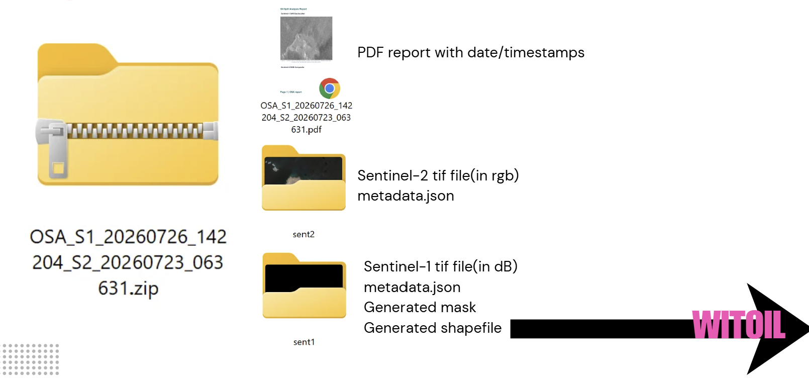
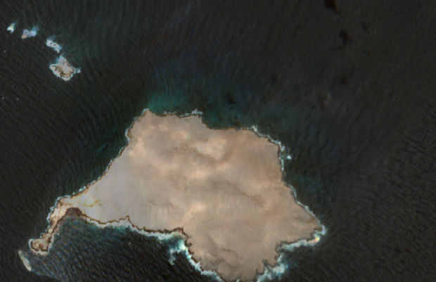
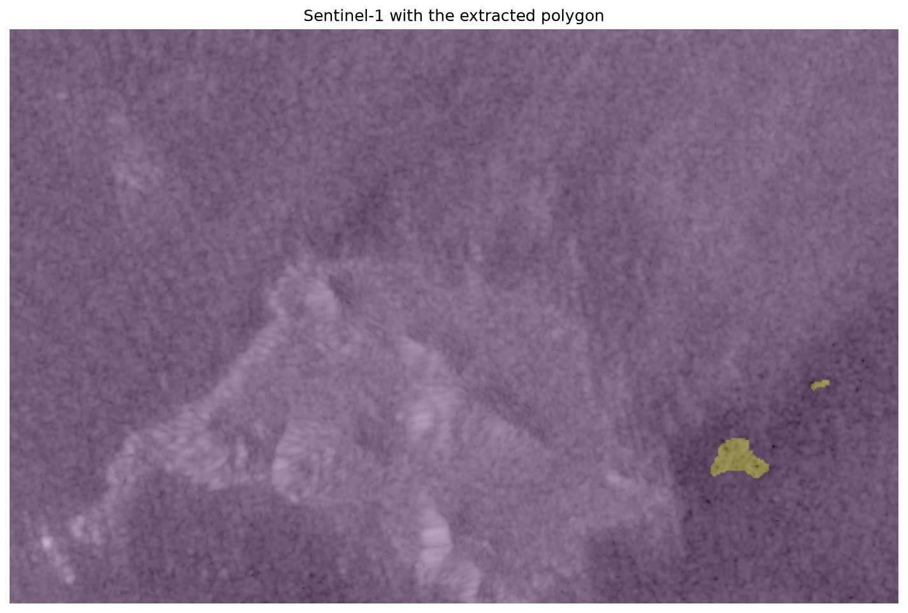

2026 Summer Internship Report
CMCC is a research institution working on climate and environmental sciences, including the development of numerical models and simulation tools for marine and coastal processes. This internship took place within the WITOIL project, an interactive service that predicts the transport and transformation of actual or hypothetical oil spills in the Mediterranean Sea. WITOIL currently relies on atmospheric wind data from ECMWF and ocean current data from the Mediterranean Forecasting System, and requires users to manually define a starting point for each simulation.
The main objective of the internship was to contribute to the integration of satellite data into the existing WITOIL workflow, with a particular focus on detecting oil spills from satellite imagery in order to provide an additional, automated source for the simulation's starting point. A secondary, personal learning objective was to strengthen Python skills for geospatial data processing and to gain experience developing and integrating processing workflows within an existing scientific project.
The internship began with a literature review used to define the milestones, which were then confirmed with my supervisor. From there, my routine consisted of writing code, sharing it for feedback, iterating, and producing a short weekly report on Tuesdays summarizing progress, findings, and any open issues. I also presented my project to the wider team at the start and end of the internship, which gave me insight into how the GOCO division organizes work across the WITOIL project and beyond.
In the first week, I carried out a rapid preliminary analysis of the Strait of Hormuz following a recent maritime incident, adapting a workflow from my Analysis and Modelling coursework and applying basic thresholding to deliver a quick satellite-based assessment for the team's immediate needs. This exercise clarified the imagery requirements for WITOIL and led directly to the concept of the Oil Spill Analyser (OSA), the tool I spent the rest of the internship developing.
Running OSA produces a single output package per event, combining a PDF report, the acquired Sentinel-1 and Sentinel-2 imagery, and — when a spill is detected — a mask and shapefile of its extent, ready to feed into WITOIL.



Figure 2. Oil spill observation using OSA at Al-Qibliyyah Island, Oman.
The full workflow (satellite data acquisition, preprocessing, image analysis, oil-spill detection, visualization, and report generation) was implemented in Python using open-source libraries and publicly available satellite data, and documented in a dedicated GitHub repository. The result is a satellite-data component for oil spill detection that can be integrated into WITOIL, alongside practical experience in satellite image processing, oil-spill detection, geospatial analysis, and scientific programming.
This internship met the learning and professional objectives set at its start. A key discovery was openEO for accessing and processing Earth observation data, which proved especially useful when an area of interest spans more than one UTM tile. Beyond consolidating my Python and geospatial data-processing skills, the internship helped me apply coursework from Application Development, Practice of Software Development, Project Management, and Analysis and Modelling to a real project.
I also gained experience presenting technical results to a professional team with varied expertise, and insight into how a research-oriented organization structures and coordinates Python projects in practice. Finally, the internship helped me build a professional network with researchers and colleagues that I hope to maintain going forward.
I would like to sincerely thank Juliana Ramos for her guidance and support throughout this internship. Although not officially my supervisor, she was involved in the project from the start and provided valuable support, particularly during my supervisor's absence — I'm especially grateful for her kindness, availability, and helpful advice.
References: WITOIL – Where Is The OIL; Marina Menga, "Where is the Oil: CMCC research supports the Civil Protection for the safety of the sea," May 2023.